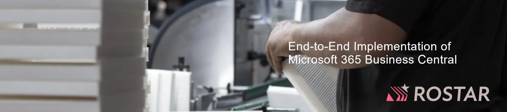
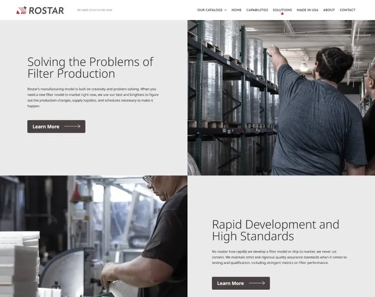
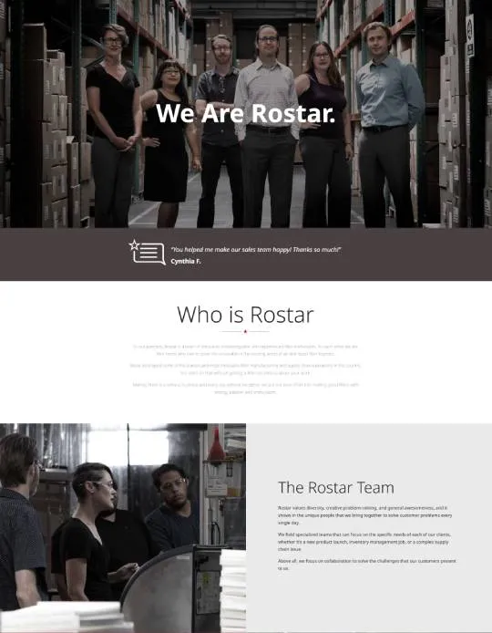
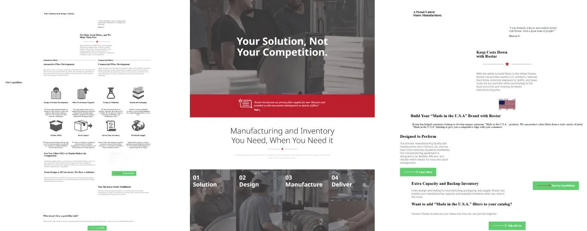

M365 Business Central Implementation For ROSTAR Filters
ROSTAR Filters is a top provider of high-quality industrial filtration solutions to their customers in various industries, such as automotive, manufacturing, and engineering. With a commitment to quality and innovation, ROSTAR Filter provides custom quality filtration solutions for customers located all over the world. As the business scaled, they were in search of a more efficient, scalable ERP system to streamline their process and support their growth.


Challenge & Solution
ROSTAR Filters is a manufacturer of industrial filtration solutions. They were using a challenging legacy ERP system that was not scalable and not integrated across the business. To create efficiencies in their operations and enable growth with a more proactive, efficient ERP, ROSTAR Filters worked with Cloud Converge to implement Microsoft Dynamics 365 Business Central. This integrated financial, inventory, production, and sales data into one system, allowing ROSTAR Filters to pull data and turn it into insights to make data-driven decisions, improve overall profitability and operational efficiencies, and implement synergies across their business.
Data Integration: The integration of company-wide data directly into Microsoft 365 Business Central allowed all departments to access real-time data while eliminating silos, improving communication, and improving information sharing.
Automating Operations: We automated a provider’s key functions with key workflows like order processing, inventory management, and financial reporting to reduce manual errors, eliminate redundancy with orders, improve the speed of operations, and support the company’s growth.
Custom Workflows: Cloud Converge customized workflows to ROSTAR Filters’ specific business requirements. ROSTAR Filters’ needs were always in alignment from what they produce to what their customers need; therefore, a key component of our implementation was to ensure the custom workflows bespoke to ROSTAR’s production processes and customers.
Result
With everyone’s responsibilities integrated into Dynamics 365 Business Central, ROSTAR Filters’ productivity has skyrocketed with all aspects of the business and immediate decision making. Data is shared and validated in real time, allowing collaboration on finance, inventory and production management all in one environment. Automating workflows reduced administrative workloads and operational inefficiencies that previously consumed one or two hours, daily. ROSTAR was now able to act quickly, reduce other possible customer delays, looking upward rapidly to meet demand. With full cloud filing capabilities and required capacity, everything scaled with demand in its cloud delivery and filing system. ROSTAR is equipped to generate real-time reports and real-time analytics with immediate information to support critical choices, improving overall business efficiency. Knowing their source of truth (checks and audits) as it relates to all company information has focused ROSTAR post pandemic into next generation activity, real time decision making and analytics is essential, with flexibility and scalability for their future growth.

Conclusion
Through their partnership with Cloud Converge, ROSTAR Filters have implemented Microsoft’s Dynamics 365 Business Central that allowed for the success of both the company and the success of all management objectives (operational improvement, efficiency improvement and productivity improvement across the business). More importantly, moving forward, the company can continue to evolve the system to meet current and future needs while ensuring future wants and in planning for future growth even more important, has a long-term solution to an immediate issue, scalability, efficiency, and growth (if that is ROSTAR’s path). ROSTAR Filters is better positioned (an agile player) in the industrial filtration market.